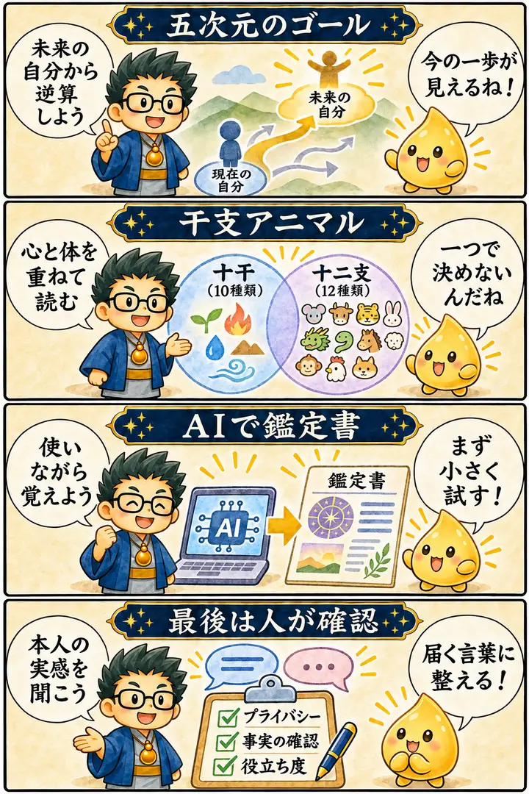

第4期 リアル講座・第4回
5次元の自分と干支アニマル・AIで鑑定書を作る
① 講座本編をYouTubeで見る ↗
② 鑑定システム使い方・特別編をYouTubeで見る ↗
この回の要約
大きなゴールを、十干・十二支・AIという補助線で「今日の一歩」へ下ろす。
本編（2時間37分）と鑑定システム特別編（26分）の2本で学ぶ回です。
前半は0次元から5次元までの比喩、人生の分岐、十干と十二支、干支アニマルを学びます。後半は基本・発展版の鑑定システム、干支学とインド占星術のアプリ、ChatGPT・Gemini・NotebookLMなどを使い、鑑定書へ形にする流れを実演しました。
4コマ漫画でつかむ

タイムスタンプ
この回は動画が2本あります。時間を押すと、上の動画がその動画・場面に切り替わります。
① 講座本編
- 00:00今日の講座を始める理由
- 13:55叶えられそうもないゴール
- 19:430次元から5次元へ
- 22:405次元の自分が「できるよ」とささやく
- 27:55人生は木、枝を移動する
- 38:24十干は太陽、十二支は月
- 44:40干支アニマル
- 47:29三つのチームと12タイプ
- 1:05:00鑑定システムの使い方
- 1:15:32AI鑑定とNotebookLM
- 1:19:44Codex・Claude Codeで鑑定書
- 1:49:49インド占星術をAIで使う
- 2:32:14一般向けの入口を作る理由
② 鑑定システム使い方・特別編
質疑応答
※ 講義の要約と書き起こしをもとに、学習用に整理・再構成しています。吹き出しは逐語引用ではありません。
高いゴールは、現在の自分を否定するためではない
本編 13:55から見る ▶今の自分では無理そうな目標を立てると、苦しくなりませんか？
自分を責める採点表にせず、未来の状態から「次に何を選ぶか」を見る地図にします。大きな言葉のあとに、今日できる一歩まで小さくします。
持ち帰り：ゴールは結果だけでなく、誰に何を届けている状態かまで書く。
五次元は、人生の分岐を考える比喩
本編 19:43から見る ▶5次元の自分が本当に別の世界にいる、という話ですか？
この講義では、点・線・面・立体・時間・分岐という順で、別の選択をした人生を想像するための比喩として使います。物理学の次元を証明する説明ではありません。
持ち帰り：比喩から得た気づきを、現実に選べる行動へ戻す。
干支アニマルは、一つの型で人を決めない
本編 44:40から見る ▶動物タイプが分かれば、その人の性格は決められますか？
分類は会話の入口です。十干、十二支、複数の動物、今の役割や環境を重ね、最後は「ご本人はどう感じますか」と確認します。
持ち帰り：型を答えにせず、本人の言葉を増やす質問へ変える。
AIは、鑑定データを「届く形」へ変える
本編 1:15:32から見る ▶表のデータだけから、スライドや鑑定書まで作れるんですか？
AIは、長い表を章立てし、文章・図解・スライドの下書きへ変えられます。ただし元データとの一致、個人情報、断定表現、相手に役立つかは人が確認します。
持ち帰り：元データ → AIの下書き → 人の検品 → 本人への確認、の順を守る。
二つの鑑定システムは、目的で使い分ける
特別編 12:45から見る ▶基本版と発展版は、どちらを使えばよいですか？
その場で見せるならアプリ、保存・印刷・複数人管理ならシート、詳しい分析なら発展版というように目的で選びます。必ず自分用のコピーを作り、アクセス権も確認します。
持ち帰り：速さ、保存、詳しさ、扱う個人情報の四点で道具を選ぶ。
インド占星術は、使ってから分からない所を学ぶ
本編 1:49:49から見る ▶用語を全部覚えるまで、鑑定してはいけませんか？
練習用のデータでアプリを使い、分からない用語を一つずつ図鑑へ戻します。ただしAIの説明を正解と決めず、元の配置と資料を照合します。
持ち帰り：小さく使う → 一点を学ぶ → 元データと照合する、を繰り返す。
覚えておきたいこと
- 「5次元」は人生の選択肢を広げる講義上の比喩として使う。
- 十干・十二支・干支アニマルは、人を決めつける答えではなく会話の補助線。
- 個人データは必要最小限にし、AIへ渡す範囲と共有先を確認する。
- AIが作った鑑定書は、元データ・事実・断定表現・本人の実感を人が検品する。
- 道具は目的で選び、コピー・権限・保存先・最新版を確認する。
復習ポイント
講義内の占術上の説明・時代の読み・象徴的な解釈は、講師の見立てです。客観的な事実や将来を保証するものではありません。